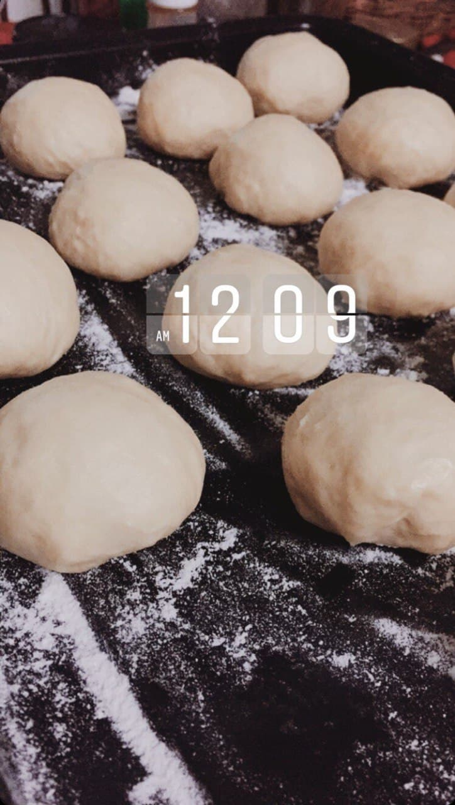
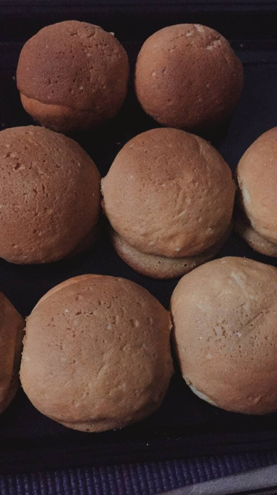
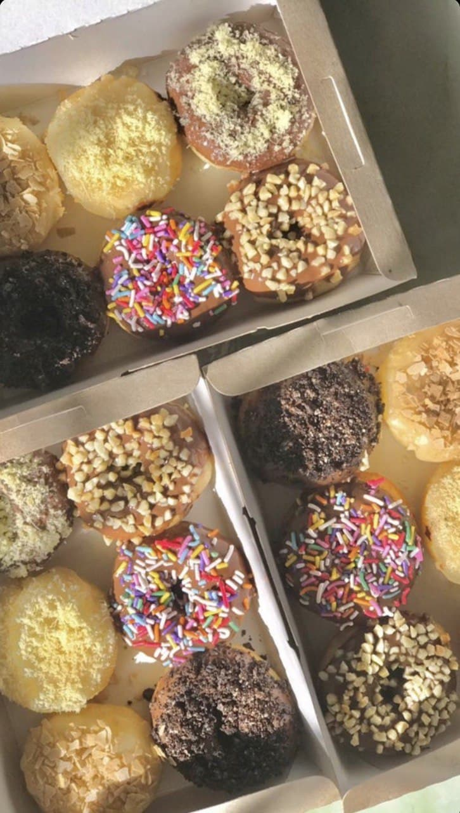

I enjoy baking, as evidenced by the images. I enjoy baking breads, desserts, and donuts, among other things. If I have time, I'll make something for my family.
How I came to love baking is that I used to eat a lot of cakes because of my part-time job. I work in a bakery not far from my home. If the cakes we make in the bakery aren't clear, we can take them home with us. So it turns out that I and my family, enjoy every bite of their cakes. Then I try to make some at home and discover that I enjoy doing so.
Surprisingly, I used my abilities to do something that made me happy. So I decided to sell the donuts I'd made myself. I received some orders at first, but then I received a large number of orders for the wedding event. They purchase my donuts in order to make it as a doorgift.

The donuts pictured above are the ones I made.
Every time I bake, I feel a glimmer of joy in my soul. It felt as if I was born to mix flour and create magic with it. Without a doubt, I have other interests, but none compare to my passion for baking.